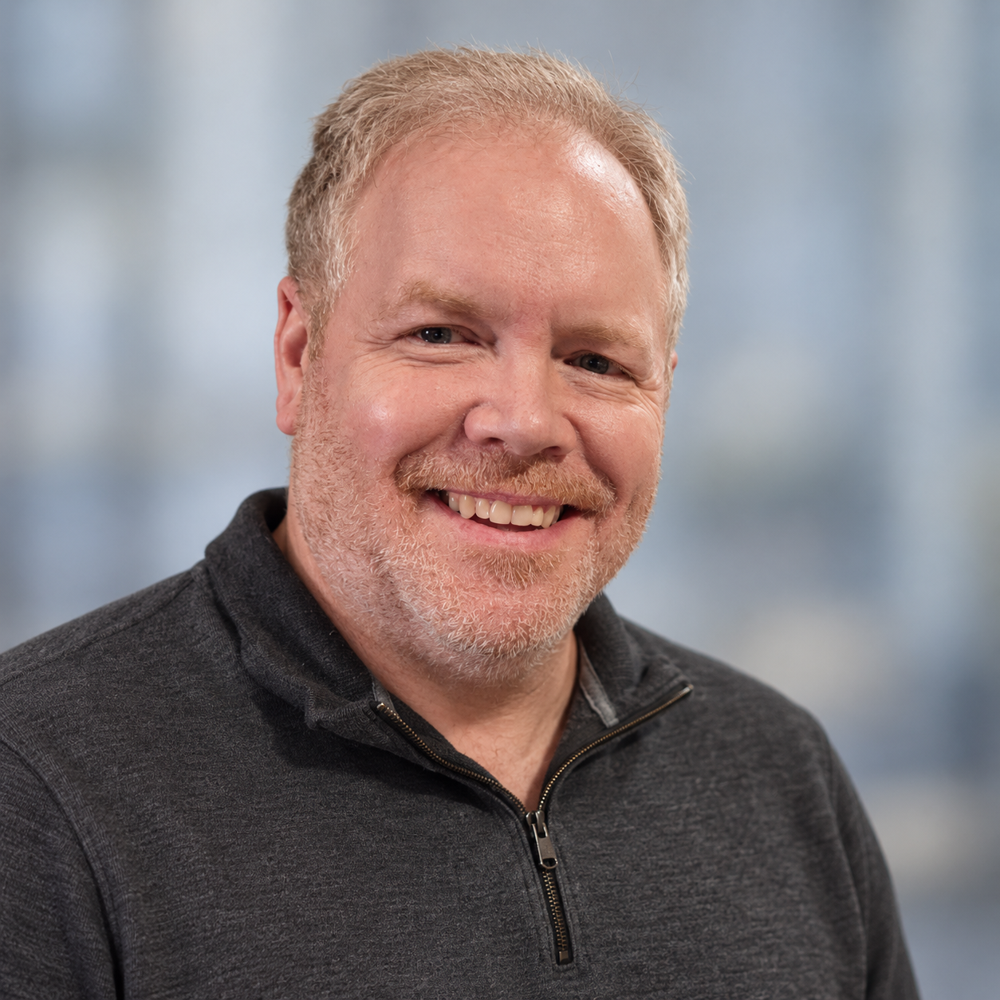

Engineer for operability
Design for the people who must run, recover, and evolve the platform—not only for the initial deployment.

Timothy Riley
Greater Philadelphia · Remote U.S.
I design and modernize enterprise infrastructure, build practical automation, and lead engineering organizations through complex platform change.
Open to senior individual-contributor and infrastructure/platform engineering leadership opportunities.
About
I’ve spent my career designing, modernizing, and leading the infrastructure behind large enterprise environments. My path began with hands-on UNIX, storage, and systems engineering and grew into global architecture and engineering leadership across Linux, database, mainframe, data-center, and cloud platforms.
I’m most effective where architecture, engineering, and leadership overlap—turning complex infrastructure problems into practical platforms, operating models, and automation that teams can sustain.
How I work
Design for the people who must run, recover, and evolve the platform—not only for the initial deployment.
Convert operational lessons into repeatable architecture, automation, documentation, and stronger controls.
Build durable technical systems while giving engineers the context and ownership to make sound decisions.
Selected impact
Architecture and engineering decisions grounded in reliability, lifecycle risk, operational simplicity, and measurable business value.
Data center · Linux · Storage networking
Led Linux/UNIX and database engineering for a new co-location build, evaluating NVMe/RDMA and standardizing the Oracle Linux implementation on NVMe/TCP over 100GbE with redundant paths and automation-ready build procedures.
Lifecycle engineering
Drove a multi-year program against 965 obsolete operating-system instances, remediating or retiring 558 through upgrades, migrations, rebuilds, and retirements.
Storage architecture
Led lifecycle engineering across 15 data centers and 50+ PB, retiring 17 legacy arrays and eliminating approximately $2.5M in maintenance exposure and 73 kVA of power demand.
Automation · Governance
Built SharePoint and Power Automate solutions for more than 100 renewals and infrastructure projects, introducing structured data, automated prioritization, reporting, and governance.
Experience
IQVIA
Directed global Linux/UNIX, mainframe, and DBA engineering organizations while remaining the technical leader and escalation point for architecture, modernization, automation, capacity, and complex platform decisions.
IQVIA
Led eight engineers responsible for global storage architecture and lifecycle engineering across 15 data centers and more than 50 PB.
IQVIA
Led UNIX and infrastructure engineering across AIX, HP-UX, Solaris, SAN/storage, backup, and Netezza platforms.
Hibu · Westtown Consulting Group / IBM
Designed and supported enterprise UNIX, SAN/storage, virtualization, backup, and disaster-recovery environments, including long-term consulting work supporting AstraZeneca.
Independent engineering portfolio · 2026–present
A hands-on environment for building reproducible platform infrastructure, testing resilient architecture, and developing practical automation and AI-enabled engineering tools.
View GitHub profileProvisioned with Packer and Ansible; reconciled through Git; validated through control-plane failure and recovery testing.
Built a reproducible three-server control plane with Packer, Ansible, embedded etcd, and kube-vip. Validated complete control-plane VM failure, API VIP failover, continued cluster service, and automatic node reintegration.
homelab-k3sBuilt a declarative platform layer with Flux, MetalLB, a canary workload, and cluster monitoring, using staged reconciliation and explicit separation from cluster construction.
home-clusterDeveloping a Python-based workstation manager for installing, configuring, validating, and operating local AI applications, models, services, and workflows.
AIStudioCurrently building
My current work extends the Kubernetes platform beyond cluster availability into the services and operating practices that make a platform useful.
Capabilities
Linux (RHEL/OEL, Ubuntu, CentOS), AIX, HP-UX, Solaris, Windows, Azure, VMware, Kubernetes, Docker
Python, Bash/KSH, Ansible, Power Automate, SharePoint, Power BI, Git/GitHub, AI/LLM APIs
IBM FlashSystem, EMC, HPE storage, Brocade SAN, NVMe/TCP, Fibre Channel, server and data-center architecture
HA/DR, capacity planning, lifecycle management, technical debt, vendor strategy, organizational design, engineering leadership
Let’s connect
I’m exploring senior architecture and platform engineering roles as well as strong infrastructure engineering leadership opportunities.